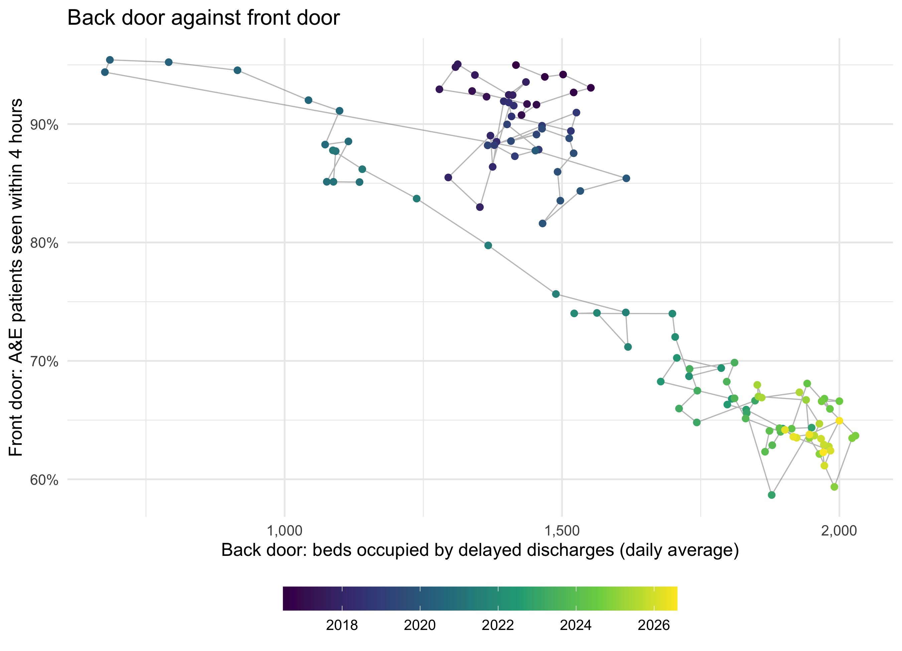
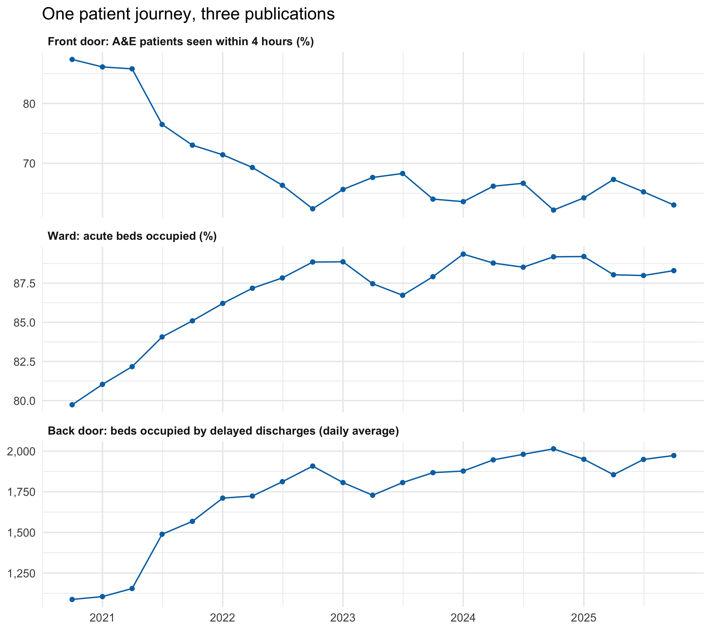
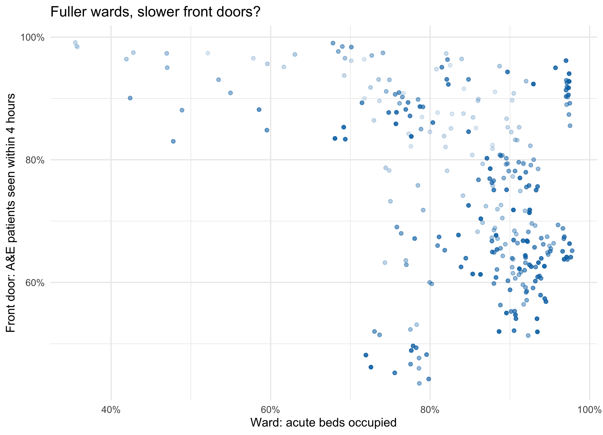

flowchart TB
subgraph PHS["Public Health Scotland open data, cached in data/"]
direction LR
AE[("A&E activity<br/>site × month")]
BD[("Hospital beds<br/>location × specialty × quarter")]
DD[("Delayed discharges<br/>board × month")]
end
AE -->|"Type 1 sites, all attendances,<br/>summed to board"| FDm(["front_door<br/>board × month"])
BD -->|"All Acute,<br/>board-level rows"| WDq(["ward<br/>board × quarter"])
DD -->|"adults,<br/>all delay reasons"| BKm(["back_door<br/>board × month"])
FDm -->|"complete quarters"| FDq(["front_door<br/>board × quarter"])
BKm -->|"complete quarters"| BKq(["back_door<br/>board × quarter"])
FDm -->|"Scotland"| A1{{"align_silos()<br/>by month"}}
BKm -->|"Scotland"| A1
FDq --> A2{{"align_silos()<br/>Scotland, by quarter"}}
WDq --> A2
BKq --> A2
FDq --> A3{{"align_silos()<br/>board × quarter"}}
WDq --> A3
BKq --> A3
A1 --> F1["flow_m<br/>Back door against front door"]
A2 --> F2["flow_q<br/>One patient journey"]
A3 --> F3["flow_hb_q<br/>Fuller wards, slower front doors?"]
classDef src fill:#ffffff,stroke:#777,color:#000
classDef front fill:#cfe3f1,stroke:#0072B2,color:#000
classDef ward fill:#d4ede4,stroke:#009E73,color:#000
classDef back fill:#f6dccb,stroke:#D55E00,color:#000
classDef align fill:#ffffff,stroke:#555,color:#000
classDef fig fill:#f4f4f4,stroke:#999,color:#000
class AE,BD,DD src
class FDm,FDq front
class WDq ward
class BKm,BKq back
class A1,A2,A3 align
class F1,F2,F3 fig
style PHS fill:#fafafa,stroke:#bbb,color:#000
Front door, ward, back door: the whole system in one script
Preparation · 2026-10-13 · Candidate grammar layer: data, and layers with their own data
The question
Patient flow is a whole-system problem. Whether someone waits in A&E depends partly on whether a ward bed is free, and that depends partly on whether the people in those beds can be discharged. Seeing this needs charts that put measures from different parts of the system side by side. But the data arrives in silos, published by different teams, and the habit is to analyse each silo on its own. Technique isn’t the obstacle: putting two datasets on one plot is easy. The obstacle is knowing the parts depend on each other, and having code that makes that dependence visible.
The earlier page had already put two silos on one chart, so the question for this page is narrower: does the code that draws the chart carry the whole-system idea, or only the chart?
What the earlier page got right, and where it stopped short
The 2026-10-09 page made the case for crossing silos with Public Health Scotland data: A&E four-hour performance against beds occupied by delayed discharges, and the “exit block” story that links them. Two of its choices work against that aim.
- It rejected the
$approach. It showedaes(x = delays_scot$delayed_beds, y = ed_scot$pct_4h)as the fragile option, because ggplot2 pairs the two vectors by position, not by month. That’s true, and it’s still the most readable expression of “this silo against that one”. The page gave up the readability to get the safety. - Its join erased the silos. The recommended route was
inner_join()into a table calledboth_scot. That’s correct, but after it, nothing in the plotting code says that the columns came from different parts of the system. The analyst writing the next chart starts again from one table, which is the silo habit again.
It also named the data frames after the publishing teams (ed, delays), not after where they sit in the system, and it stopped at two silos, jumping from the front door straight to the back.
Design decisions
Each decision below is recorded as considered, chosen and why, for a group to reopen.
1. Name each silo by its place on the patient’s journey. Considered: team names (ed, delays, beds); dataset names (ae_monthly); journey names. Chosen: front_door (A&E), ward (acute beds) and back_door (delayed discharges). The names cost nothing and say what the chart needs said: these are three points on one path, not three reports. Anyone reading flow$back_door$delayed_beds is reminded where the patient is.
2. Keep the silos separate, but align them before plotting. Considered: a joined wide table (the earlier page); layers with their own data (works for time series, can’t make a scatter); $ vectors as they come (fragile). Chosen: a small helper, align_silos(), that takes named silos and the shared keys, refuses any silo with more than one row per key, keeps only keys every silo has, and returns the silos as a named list, each sorted the same way. The silos stay distinct objects with distinct names, and the pairing rule is applied once, in one place, where it can be checked.
3. Use $ freely after alignment. Chosen: plotting code like aes(x = flow$back_door$delayed_beds, y = flow$front_door$pct_4h). Every aesthetic names the silo it came from. Alignment makes it safe, because row i of every silo is the same month.
4. Make the silo itself a variable, so the grammar can map it. Considered: one chart per silo stacked with patchwork (the earlier “silo view”); dual y axes (rejected: two scales on one axis invite the reader to compare lines whose heights mean nothing to each other). Chosen: bind the silos into one long table with bind_rows(..., .id = "stage") and facet by stage, in journey order. “Which part of the system” becomes a column, which is the grammar’s way of saying it matters.
5. Add the middle of the journey. The ward silo is acute bed occupancy from the Public Health Scotland quarterly beds publication. It exists only by quarter, so the other two silos are summed to quarters for the whole-system figures, and a quarter counts only when all three of its months are present. Considered: keep everything monthly and leave the ward out; interpolate occupancy to months (rejected: it invents data). The cost is a shorter, coarser record: 21 quarters, Oct–Dec 2020 to Oct–Dec 2025, starting late in the first pandemic year.
6. Leave admitted patients and ambulances for later. The four-hour figure counts every Type 1 attendance, including the majority who go home and never need a ward bed. Admitted-only figures, and ambulance handover times at the very front door, would sharpen the chain. Neither is in the open files used here.
Sources and joins
Three publications, three silos, and three alignments, one for each figure. Nothing is joined into a single wide table: each align_silos() step trims the silos to the keys they share and hands them back side by side, still named.
Two things the diagram makes visible that the code alone doesn’t. The ward only exists by quarter, so it forces the other two silos up to its grain before they can meet it; and each figure has its own alignment, so the monthly chart can use all 122 months, while the three-silo charts are limited to the 21 quarters the ward covers.
How alignment works, and what it catches
Code
flow_m <- align_silos(
front_door = front_door_scot_m, # A&E, Scotland, by month
back_door = back_door_scot_m, # delayed discharges, Scotland, by month
by = "month"
)For the monthly Scotland system, alignment keeps 122 months, July 2016 to August 2026, and drops 108 A&E months that have no delayed-discharge record (that series starts later). The drop is reported, not silent.
If a silo is ambiguous, for example because a month appears twice after a careless append, alignment stops instead of drawing a plausible wrong chart:
Error: silo 'back_door' has 1 key(s) with more than one row; aggregate it to
one row per month firstFirst drafts of the figures
These are the agent’s drafts, made without a group. Each one is a set of decisions the group can overturn.
One silo against another, by name
Code
ggplot() +
geom_path(aes(x = flow_m$back_door$delayed_beds, y = flow_m$front_door$pct_4h),
linewidth = 0.4, alpha = 0.5, colour = "grey50") +
geom_point(aes(x = flow_m$back_door$delayed_beds, y = flow_m$front_door$pct_4h,
colour = flow_m$front_door$month), size = 1.8) +
scale_colour_viridis_c(trans = "date", labels = scales::label_date("%Y")) +
scale_x_continuous(labels = scales::comma) +
scale_y_continuous(labels = \(y) paste0(y, "%")) +
labs(x = "Back door: beds occupied by delayed discharges (daily average)",
y = "Front door: A&E patients seen within 4 hours",
colour = NULL, title = "Back door against front door") +
theme_minimal(base_size = 13) +
theme(legend.key.width = unit(2, "cm"), legend.position = "bottom")
This is the same chart as the earlier page’s cross-silo view, drawn from separate silos rather than a joined table. Nothing about the picture changes. What changes is the code a reader copies: it names the two parts of the system on every line.
The whole system on one page
Code
stages <- c(
front_door = "Front door: A&E patients seen within 4 hours (%)",
ward = "Ward: acute beds occupied (%)",
back_door = "Back door: beds occupied by delayed discharges (daily average)"
)
whole_system <- bind_rows(
front_door = tibble(quarter = flow_q$front_door$quarter, value = flow_q$front_door$pct_4h),
ward = tibble(quarter = flow_q$ward$quarter, value = flow_q$ward$occupancy),
back_door = tibble(quarter = flow_q$back_door$quarter, value = flow_q$back_door$delayed_beds),
.id = "stage"
) |>
mutate(stage = factor(stage, levels = names(stages), labels = stages))
ggplot(whole_system, aes(quarter, value)) +
geom_line(colour = "#0072B2") +
geom_point(colour = "#0072B2", size = 1.5) +
facet_wrap(~ stage, ncol = 1, scales = "free_y") +
scale_y_continuous(labels = scales::comma) +
labs(x = NULL, y = NULL, title = "One patient journey, three publications") +
theme_minimal(base_size = 13) +
theme(strip.text = element_text(hjust = 0, face = "bold"))
Read from top to bottom, the panels follow a patient in and out of hospital. Over these 21 quarters, acute occupancy ran from 80% to 89%, and it was above 85% in 17 of them. 85% is often quoted as the level above which hospitals start to struggle to admit promptly. The line between the panels is the argument the chart exists to make: the front door’s figure is partly made at the back door, and the ward is where they meet.
Front door against ward, board by board
Code
ggplot() +
geom_point(aes(x = flow_hb_q$ward$occupancy, y = flow_hb_q$front_door$pct_4h,
alpha = flow_hb_q$ward$quarter),
colour = "#0072B2", size = 1.6) +
scale_alpha_continuous(range = c(0.15, 0.9), trans = "date", guide = "none") +
scale_x_continuous(labels = \(x) paste0(x, "%")) +
scale_y_continuous(labels = \(y) paste0(y, "%")) +
labs(x = "Ward: acute beds occupied",
y = "Front door: A&E patients seen within 4 hours",
title = "Fuller wards, slower front doors?") +
theme_minimal(base_size = 13)
This uses 14 boards with both an emergency department and acute beds. Boards differ in size, case mix and geography, so a cloud like this mixes differences between boards with changes within each board over time. Separating the two is the obvious next step for a group, by faceting by board or by drawing one path per board.
Candidate mappings (the group chooses)
Candidates (the group chooses) - nhs-whole-system:
silos: front_door (A&E), ward (acute beds), back_door (delayed discharges)
grain: board x month (two silos) or board x quarter (all three)
position x/y: any silo's measure against any other's, after align_silos()
facet: stage (journey order), or board
colour/alpha: time; or a third silo's measure (e.g. delayed beds on the ward plot)
silo as data: bind_rows(.id = "stage") turns "which part of the system" into a variableQuestions for the group:
- Is the
$version clearer, or just shorter? The test is whether someone new to the data can say, from the code alone, which parts of the system the chart connects. - Journey names or team names?
front_dooris vivid but informal. Some teams would rather see the publication name. - Should the helper be visible? It could live in a shared script so the session sees only the
$plots, or be written live as part of the lesson. - What belongs between the ward and the back door? Length of stay and discharges by day of the week are both published and both sit on the same path.
What the data can’t say
These are aggregate totals by board and month or quarter. They can’t follow a patient, so they can’t show that the person waiting in A&E was waiting for a bed held by a delayed discharge. The three measures share drivers, including an ageing population, winter, staffing and the pandemic, that could move them together without any causal chain. The four-hour figure includes patients who were never admitted. Acute occupancy is an average over a quarter and a whole board, so it hides the days and hospitals that were full. The three-silo record is only 21 quarters, starting late in the first pandemic year, which is too short to separate a trend from a relationship. Bed definitions and delay definitions are set nationally and can change; a change in definition would look like a change in the system.
TipReproducing this page: download the whole pipeline as one R script
Download whole-system.R (annotated, about 300 lines). It runs every step on this page from start to finish: it fetches the data (or uses the cached copies in data/), builds the three silos, defines align_silos(), sums to quarters, does the three alignments, shows the duplicated-month check, saves the three figures to figures/, and prints the numbers quoted above. Run it from the repository root, or from any empty folder:
Rscript whole-system.RIt needs only the tidyverse. It was checked on 2026-10-13 by running it in an empty folder, where it downloaded all three files and reproduced every number on this page.
The data comes from the Public Health Scotland open data portal, under the Open Government Licence v3:
phs-ae-monthly.csv: Monthly A&E activity and waiting times.phs-delayed-discharge.csv: Delayed discharges in NHSScotland.phs-beds-quarterly.csv: NHS beds information in Scotland, beds by board of treatment and specialty. This page uses theAll Acuterows at board level (whereLocationequalsHB). Pulled on 2026-10-13, it runs from October–December 2020 to October–December 2025, and quarters are calendar quarters.
Some download links carry the release month, so they go out of date. If a download fails, take the current link from the dataset page and update the sources table at the top of the script. The page itself also reads phs-health-boards.csv (health board codes and labels), which the script doesn’t need.
Cite Public Health Scotland as the source.